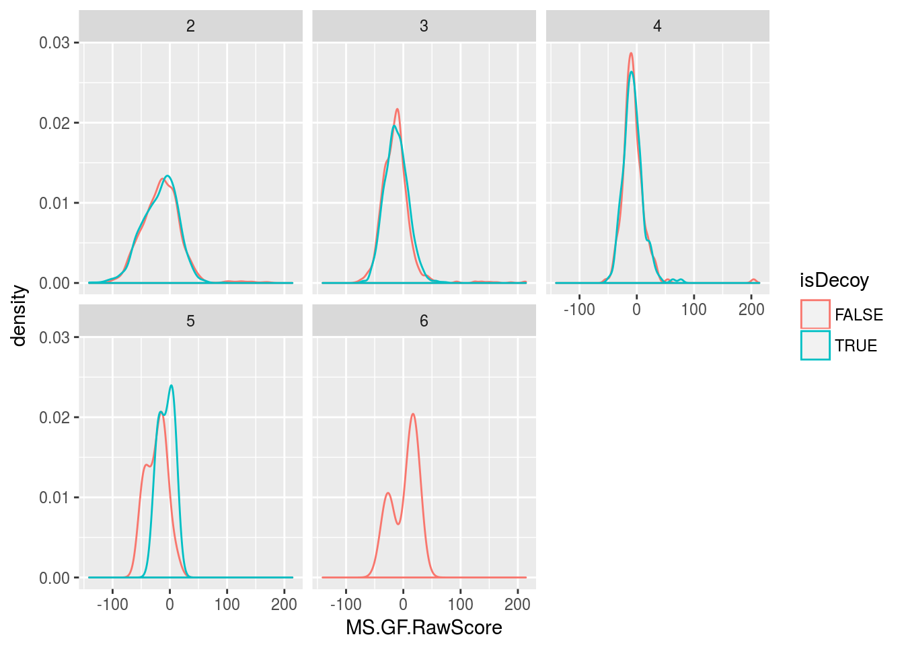

MSnbase: MS data processing, visualisation and quantification
Laurent Gatto
Johannes Rainer
Sebastian Gibb
Source:vignettes/MSnbase-demo.Rmd
MSnbase-demo.RmdAbstract
This vignette describes the functionality implemented in the MSnbase package. MSnbase aims at (1) facilitating the import, processing, visualisation and quantification of mass spectrometry data into the R environment (R Development Core Team 2011) by providing specific data classes and methods and (2) enabling the utilisation of throughput-high data analysis pipelines provided by the Bioconductor (Gentleman et al. 2004) project.
Foreword
MSnbase is under active development; current functionality is evolving and new features will be added. This software is free and open-source software. If you use it, please support the project by citing it in publications:
Gatto L, Lilley KS. MSnbase-an R/Bioconductor package for isobaric tagged mass spectrometry data visualization, processing and quantitation. Bioinformatics. 2012 Jan 15;28(2):288-9. doi: 10.1093/bioinformatics/btr645. PMID: 22113085.
Questions and bugs
For bugs, typos, suggestions or other questions, please file an issue in our tracking system (https://github.com/lgatto/MSnbase/issues) providing as much information as possible, a reproducible example and the output of sessionInfo().
If you don’t have a GitHub account or wish to reach a broader audience for general questions about proteomics analysis using R, you may want to use the Bioconductor support site: https://support.bioconductor.org/.
Introduction
MSnbase (L. Gatto and Lilley 2012) aims are providing a reproducible research framework to proteomics data analysis. It should allow researcher to easily mine mass spectrometry data, explore the data and its statistical properties and visually display these.
MSnbase also aims at being compatible with the infrastructure implemented in Bioconductor, in particular Biobase. As such, classes developed specifically for proteomics mass spectrometry data are based on the eSet and ExpressionSet classes. The main goal is to assure seamless compatibility with existing meta data structure, accessor methods and normalisation techniques.
This vignette illustrates MSnbase utility using a dummy data sets provided with the package without describing the underlying data structures. More details can be found in the package, classes, method and function documentations. A description of the classes is provided in the MSnbase-development vignette1.
Speed and memory requirements
Raw mass spectrometry file are generally several hundreds of MB large and most of this is used for binary raw spectrum data. As such, data containers can easily grow very large and thus require large amounts of RAM. This requirement is being tackled by avoiding to load the raw data into memory and using on-disk random access to the content of mzXML/mzML data files on demand. When focusing on reporter ion quantitation, a direct solution for this is to trim the spectra using the trimMz method to select the area of interest and thus substantially reduce the size of the Spectrum objects. This is illustrated in section @ref(sec:trim).
The independent handling of spectra is ideally suited for parallel processing. The quantify method now performs reporter peaks quantitation in parallel. More functions are being updated.
Finally, recent developmenets in version 2 of the package have solved the memory issue by implementing and on-disk version the of data class storing raw data (MSnExp, see section @ref(sec:msnexp)), where the spectra a accessed on-disk only when required. The benchmarking vignette compares the on-disk and in-memory implemenatations2.
Data structure and content
Importing experiments
MSnbase is able to import raw MS data stored in one of the XML-based formats as well as peak lists in the mfg format3.
Raw data The XML-based formats, mzXML (Pedrioli et al. 2004), mzData (Orchard et al. 2007) and mzML (Martens et al. 2010) can be imported with the readMSData function, as illustrated below (see ?readMSData for more details). To make use of the new on-disk implementation, set mode = "onDisk" in readMSData rather than using the default mode = "inMemory".
file <- dir(system.file(package = "MSnbase", dir = "extdata"),
full.names = TRUE, pattern = "mzXML$")
rawdata <- readMSData(file, msLevel = 2, verbose = FALSE)## Warning: The direct support for chromatogram info is only available in mzML
## format.Only spectra of a given MS level can be loaded at a time by setting the msLevel parameter accordingly in readMSData and in-memory data. In this document, we will use the itraqdata data set, provided with MSnbase. It includes feature metadata, accessible with the fData accessor. The metadata includes identification data for the 55 MS2 spectra.
MSnbase 2.0 Version 2.0 and later of MSnbase use a new on-disk data storage model (see the benchmarking vignette for more details). The new data backend is compatible with the orignal in-memory model. To make use of the new infrastructure, read your raw data by setting the mode argument to "onDisk" (the default in "inMemory"). The new on-disk implementation supports several MS levels in a single raw data object. All existing operations work irrespective of the backend.
Peak lists Peak lists can often be exported after spectrum processing from vendor-specific software and are also used as input to search engines. Peak lists in mgf format can be imported with the function readMgfData (see ?readMgfData for details) to create experiment objects. Experiments or individual spectra can be exported to an mgf file with the writeMgfData methods (see ?writeMgfData for details and examples).
Experiments with multiple runs Although it is possible to load and process multiple files serially and later merge the resulting quantitation data as show in section @ref(sec:combine), it is also feasible to load several raw data files at once. Here, we report the analysis of an LC-MSMS experiment were 14 liquid chromatography (LC) fractions were loaded using readMSData on a 32-cores servers with 128 Gb of RAM. It took about 90 minutes to read the 14 uncentroided mzXML raw files (4.9 Gb on disk in total) and create a 3.3 Gb raw data object (an MSnExp instance, see next section). Quantitation of 9 reporter ions (iTRAQ9 object, see @ref(sec:reporterions)) for 88690 features was performed in parallel on 16 processors4 and took 76 minutes. The resulting quantitation data was only 22.1 Mb and could easily be further processed and analysed on a standard laptop computer. These number as based on the older in-memory implementation. As shown in the benchmarking vignette, using on-disk data greatly reduces memory requirement and computation time.
See also section @ref(sec:io2) to import quantitative data stored in spreadsheets into R for further processing using MSnbase. The MSnbase-iovignette[in R, open it with vignette("MSnbase-io") or read it online here] gives a general overview of MSnbase’s input/ouput capabilites.
See section @ref(sec:io3) for importing chromatographic data of SRM/MRM experiments.
Exporting experiments/MS data
MSnbase supports also to write MSnExp or OnDiskMSnExp objects to mzML or mzXML files using the writeMSData function. This is specifically useful in workflows in which the MS data was heavily manipulated. Presently, each sample/file is exported into one file.
Below we write the data in mzML format to a temporary file. By setting the optional parameter copy = TRUE general metadata (such as instrument info or all data processing descriptions) are copied over from the originating file.
writeMSData(rawdata, file = paste0(tempfile(), ".mzML"), copy = TRUE)MS experiments
Raw data is contained in MSnExp objects, that stores all the spectra of an experiment, as defined by one or multiple raw data files.
library("MSnbase")
itraqdata## MSn experiment data ("MSnExp")
## Object size in memory: 1.9 Mb
## - - - Spectra data - - -
## MS level(s): 2
## Number of spectra: 55
## MSn retention times: 19:9 - 50:18 minutes
## - - - Processing information - - -
## Data loaded: Wed May 11 18:54:39 2011
## Updated from version 0.3.0 to 0.3.1 [Fri Jul 8 20:23:25 2016]
## MSnbase version: 1.1.22
## - - - Meta data - - -
## phenoData
## rowNames: 1
## varLabels: sampleNames sampleNumbers
## varMetadata: labelDescription
## Loaded from:
## dummyiTRAQ.mzXML
## protocolData: none
## featureData
## featureNames: X1 X10 ... X9 (55 total)
## fvarLabels: spectrum ProteinAccession ProteinDescription
## PeptideSequence
## fvarMetadata: labelDescription
## experimentData: use 'experimentData(object)'head(fData(itraqdata))## spectrum ProteinAccession ProteinDescription
## X1 1 BSA bovine serum albumin
## X10 10 ECA1422 glucose-1-phosphate cytidylyltransferase
## X11 11 ECA4030 50S ribosomal subunit protein L4
## X12 12 ECA3882 chaperone protein DnaK
## X13 13 ECA1364 succinyl-CoA synthetase alpha chain
## X14 14 ECA0871 NADP-dependent malic enzyme
## PeptideSequence
## X1 NYQEAK
## X10 VTLVDTGEHSMTGGR
## X11 SPIWR
## X12 TAIDDALK
## X13 SILINK
## X14 DFEVVNNESDPRAs illustrated above, showing the experiment textually displays it’s content:
Information about the raw data, i.e. the spectra.
Specific information about the experiment processing5 and package version. This slot can be accessed with the
processingDatamethod.Other meta data, including experimental phenotype, file name(s) used to import the data, protocol data, information about features (individual spectra here) and experiment data. Most of these are implemented as in the eSet class and are described in more details in their respective manual pages. See
?MSnExpand references therein for additional background information.
The experiment meta data associated with an MSnExp experiment is of class MIAPE. It stores general information about the experiment as well as MIAPE (Minimum Information About a Proteomics Experiment) information (C. F. Taylor et al. 2007, Taylor et al. (2008)). This meta-data can be accessed with the experimentData method. When available, a summary of MIAPE-MS data can be printed with the msInfo method. See ?MIAPE for more details.
Spectra objects
The raw data is composed of the 55 MS spectra. The spectra are named individually (X1, X10, X11, X12, X13, X14, …) and stored in a environment. They can be accessed individually with itraqdata[["X1"]] or itraqdata[[1]], or as a list with spectra(itraqdata). As we have loaded our experiment specifying msLevel=2, the spectra will all be of level 2 (or higher, if available).
sp <- itraqdata[["X1"]]
sp## Object of class "Spectrum2"
## Precursor: 520.7833
## Retention time: 19:9
## Charge: 2
## MSn level: 2
## Peaks count: 1922
## Total ion count: 26413754Attributes of individual spectra or of all spectra of an experiment can be accessed with their respective methods: precursorCharge for the precursor charge, rtime for the retention time, mz for the MZ values, intensity for the intensities, … see the Spectrum, Spectrum1 and Spectrum2 manuals for more details.
peaksCount(sp)## [1] 1922head(peaksCount(itraqdata))## X1 X10 X11 X12 X13 X14
## 1922 1376 1571 2397 2574 1829rtime(sp)## [1] 1149.31head(rtime(itraqdata))## X1 X10 X11 X12 X13 X14
## 1149.31 1503.03 1663.61 1663.86 1664.08 1664.32Reporter ions
Reporter ions are defined with the ReporterIons class. Specific peaks of interest are defined by a MZ value, a with around the expected MZ and a name (and optionally a colour for plotting, see section @ref(sec:plotting)). ReporterIons instances are required to quantify reporter peaks in MSnExp experiments. Instances for the most commonly used isobaric tags like iTRAQ 4-plex and 8-plex and TMT 6- and 10-plex tags are already defined in MSnbase. See ?ReporterIons for details about how to generate new ReporterIons objects.
iTRAQ4## Object of class "ReporterIons"
## iTRAQ4: '4-plex iTRAQ' with 4 reporter ions
## - 114.1112 +/- 0.05 (red)
## - 115.1083 +/- 0.05 (green)
## - 116.1116 +/- 0.05 (blue)
## - 117.115 +/- 0.05 (yellow)TMT10## Object of class "ReporterIons"
## TMT10HCD: '10-plex TMT HCD' with 10 reporter ions
## - 126.1277 +/- 0.002 (#8DD3C7)
## - 127.1248 +/- 0.002 (#FFFFB3)
## - 127.1311 +/- 0.002 (#BEBADA)
## - 128.1281 +/- 0.002 (#FB8072)
## - 128.1344 +/- 0.002 (#80B1D3)
## - 129.1315 +/- 0.002 (#FDB462)
## - 129.1378 +/- 0.002 (#B3DE69)
## - 130.1348 +/- 0.002 (#FCCDE5)
## - 130.1411 +/- 0.002 (#D9D9D9)
## - 131.1382 +/- 0.002 (#BC80BD)Chromatogram objects
Chromatographic data, i.e. intensity values along the retention time dimension for a given \(m/z\) range/slice, can be extracted with the chromatogram method. Below we read a file from the msdata package and extract the (MS level 1) chromatogram. Without providing an \(m/z\) and a retention time range the function returns the total ion chromatogram (TIC) for each file within the MSnExp or OnDiskMSnExp object. See also section @ref(sec:io3) for importing chromatographic data from SRM/MRM experiments.
f <- c(system.file("microtofq/MM14.mzML", package = "msdata"))
mtof <- readMSData(f, mode = "onDisk")## Warning: pwiz not yet initialized.mtof_tic <- chromatogram(mtof)
mtof_tic## Chromatograms with 1 row and 1 column
## MM14.mzML
## <Chromatogram>
## [1,] length: 112
## phenoData with 1 variables
## featureData with 1 variablesChromatographic data, represented by the intensity-retention time duplets, is stored in the Chromatogram object. The chromatogram method returns a Chromatograms object (note the s) which holds multiple Chromatogram objects and arranges them in a two-dimensional grid with columns representing files/samples of the MSnExp or OnDiskMSnExp object and rows \(m/z\)-retention time ranges. In the example above the Chromatograms object contains only a single Chromatogram object. Below we access this chromatogram object. Similar to the Spectrum objects, Chromatogram objects provide the accessor functions intensity and rtime to access the data, as well as the mz function, that returns the \(m/z\) range of the chromatogram.
mtof_tic[1, 1]## Object of class: Chromatogram
## Intensity values aggregated using: sum
## length of object: 112
## from file: 1
## mz range: [94.80679, 1004.962]
## rt range: [270.334, 307.678]
## MS level: 1head(intensity(mtof_tic[1, 1]))## F1.S001 F1.S002 F1.S003 F1.S004 F1.S005 F1.S006
## 64989 67445 77843 105097 155609 212760head(rtime(mtof_tic[1, 1]))## F1.S001 F1.S002 F1.S003 F1.S004 F1.S005 F1.S006
## 270.334 270.671 271.007 271.343 271.680 272.016mz(mtof_tic[1, 1])## [1] 94.80679 1004.96155To extract the base peak chromatogram (the largest peak along the \(m/z\) dimension for each retention time/spectrum) we set the aggregationFun argument to "max".
mtof_bpc <- chromatogram(mtof, aggregationFun = "max")See the Chromatogram help page and the vignettes from the xcms package for more details and use cases, also on how to extract chromatograms for specific ions.
Plotting raw data
MS data space
The MSmap class can be used to isolate specific slices of interest from a complete MS acquisition by specifying \(m/z\) and retention time ranges. One needs a raw data file in a format supported by mzR’s openMSfile (mzML, mzXML, …). Below we first download a raw data file from the PRIDE repository and create an MSmap containing all the MS1 spectra between acquired between 30 and 35 minutes and peaks between 521 and 523 \(m/z\). See ?MSmap for details.
## downloads the data
library("rpx")
px1 <- PXDataset("PXD000001")
mzf <- pxget(px1, 7)
## reads the data
ms <- openMSfile(mzf)
hd <- header(ms)
## a set of spectra of interest: MS1 spectra eluted
## between 30 and 35 minutes retention time
ms1 <- which(hd$msLevel == 1)
rtsel <- hd$retentionTime[ms1] / 60 > 30 &
hd$retentionTime[ms1] / 60 < 35
## the map
M <- MSmap(ms, ms1[rtsel], 521, 523, .005, hd, zeroIsNA = TRUE)M## Object of class "MSmap"
## Map [75, 401]
## [1] Retention time: 30:1 - 34:58
## [2] M/Z: 521 - 523 (res 0.005)The M map object can be rendered as a heatmap with plot, as shown on figure @ref(fig:mapheat).
plot(M, aspect = 1, allTicks = FALSE)Heat map of a chunk of the MS data.
One can also render the data in 3 dimension with the plot3D function, as show on figure @ref(fig:map3d).
plot3D(M)3 dimensional represention of MS map data.
To produce figure @ref(fig:map3d2), we create a second MSmap object containing the first two MS1 spectra of the first map (object M above) and all intermediate MS2 spectra and display \(m/z\) values between 100 and 1000.
i <- ms1[which(rtsel)][1]
j <- ms1[which(rtsel)][2]
M2 <- MSmap(ms, i:j, 100, 1000, 1, hd)M2## Object of class "MSmap"
## Map [12, 901]
## [1] Retention time: 30:1 - 30:5
## [2] M/Z: 100 - 1000 (res 1)plot3D(M2)3 dimensional represention of MS map data. MS1 and MS2 spectra are coloured in blue and magenta respectively.
MS Spectra
Spectra can be plotted individually or as part of (subset) experiments with the plot method. Full spectra can be plotted (using full=TRUE), specific reporter ions of interest (by specifying with reporters with reporters=iTRAQ4 for instance) or both (see figure @ref(fig:spectrumPlot)).
plot(sp, reporters = iTRAQ4, full = TRUE)Raw MS2 spectrum with details about reporter ions.
It is also possible to plot all spectra of an experiment (figure @ref(fig:msnexpPlot)). Lets start by subsetting the itraqdata experiment using the protein accession numbers included in the feature metadata, and keep the 6 from the BSA protein.
sel <- fData(itraqdata)$ProteinAccession == "BSA"
bsa <- itraqdata[sel]
bsa## MSn experiment data ("MSnExp")
## Object size in memory: 0.11 Mb
## - - - Spectra data - - -
## MS level(s): 2
## Number of spectra: 3
## MSn retention times: 19:9 - 36:17 minutes
## - - - Processing information - - -
## Data loaded: Wed May 11 18:54:39 2011
## Updated from version 0.3.0 to 0.3.1 [Fri Jul 8 20:23:25 2016]
## Data [logically] subsetted 3 spectra: Thu May 17 15:35:35 2018
## MSnbase version: 1.1.22
## - - - Meta data - - -
## phenoData
## rowNames: 1
## varLabels: sampleNames sampleNumbers
## varMetadata: labelDescription
## Loaded from:
## dummyiTRAQ.mzXML
## protocolData: none
## featureData
## featureNames: X1 X52 X53
## fvarLabels: spectrum ProteinAccession ProteinDescription
## PeptideSequence
## fvarMetadata: labelDescription
## experimentData: use 'experimentData(object)'as.character(fData(bsa)$ProteinAccession)## [1] "BSA" "BSA" "BSA"These can then be visualised together by plotting the MSnExp object, as illustrated on figure @ref(fig:msnexpPlot).
plot(bsa, reporters = iTRAQ4, full = FALSE) + theme_gray(8)Experiment-wide raw MS2 spectra. The y-axes of the individual spectra are automatically rescaled to the same range. See section @ref(sec:norm) to rescale peaks identically.
## NULLCustomising your plots The MSnbase plot methods have a logical plot parameter (default is TRUE), that specifies if the plot should be printed to the current device. A plot object is also (invisibly) returned, so that it can be saved as a variable for later use or for customisation.
MSnbase uses the package to generate plots, which can subsequently easily be customised. More details about can be found in (Wickham 2009) (especially chapter 8) and on http://had.co.nz/ggplot2/. Finally, if a plot object has been saved in a variable p, it is possible to obtain a summary of the object with summary(p). To view the data frame used to generate the plot, use p$data.
MS Chromatogram
Chromatographic data can be plotted using the plot method which, in contrast to the plot method for Spectrum classes, uses R base graphics. The plot method is implemented for Chromatogram and Chromatograms classes. The latter plots all chromatograms for the same \(m/z\)-rt range of all files in an experiment (i.e. for one row in the Chromatograms object) into one plot.
plot(mtof_bpc)Base peak chromatogram.
Tandem MS identification data
Typically, identification data is produced by a search engine and serialised to disk in the mzIdentML (or mzid) file format. This format can be parsed by openIDfile from the mzR package or mzID from the mzID package. The MSnbase package relies on the former (which is faster) and offers a simplified interface by converting the dedicated identification data objects into data.frames.
library("msdata")
f <- "TMT_Erwinia_1uLSike_Top10HCD_isol2_45stepped_60min_01-20141210.mzid"
idf <- msdata::ident(full.names = TRUE, pattern = f)
iddf <- readMzIdData(idf)
str(iddf)## 'data.frame': 5802 obs. of 32 variables:
## $ sequence : chr "RQCRTDFLNYLR" "ESVALADQVTCVDWRNRKATKK" "KELLCLAMQIIR" "QRMARTSDKQQSIRFLERLCGR" ...
## $ spectrumID : chr "controllerType=0 controllerNumber=1 scan=2949" "controllerType=0 controllerNumber=1 scan=6534" "controllerType=0 controllerNumber=1 scan=5674" "controllerType=0 controllerNumber=1 scan=4782" ...
## $ chargeState : int 3 2 2 3 3 3 2 3 3 2 ...
## $ rank : int 1 1 1 1 1 1 1 1 1 1 ...
## $ passThreshold : logi TRUE TRUE TRUE TRUE TRUE TRUE ...
## $ experimentalMassToCharge: num 548 1288 744 913 927 ...
## $ calculatedMassToCharge : num 548 1288 744 913 926 ...
## $ modNum : int 1 1 1 1 1 1 1 2 2 1 ...
## $ isDecoy : logi FALSE FALSE TRUE FALSE TRUE FALSE ...
## $ post : chr "V" "G" "Q" "D" ...
## $ pre : chr "R" "R" "R" "R" ...
## $ start : int 574 69 131 182 135 310 182 201 201 121 ...
## $ end : int 585 90 142 203 158 334 203 233 233 140 ...
## $ DatabaseAccess : chr "ECA2006" "ECA1676" "XXX_ECA2855" "ECA3009" ...
## $ DBseqLength : int 1295 110 157 437 501 477 437 1204 1204 210 ...
## $ DatabaseSeq : chr "" "" "" "" ...
## $ DatabaseDescription : chr "ECA2006 ATP-dependent helicase" "ECA1676 putative growth inhibitory protein" "" "ECA3009 putative coproporphyrinogen oxidase" ...
## $ acquisitionNum : num 2949 6534 5674 4782 5839 ...
## $ spectrumFile : chr "TMT_Erwinia_1uLSike_Top10HCD_isol2_45stepped_60min_01-20141210.mzML" "TMT_Erwinia_1uLSike_Top10HCD_isol2_45stepped_60min_01-20141210.mzML" "TMT_Erwinia_1uLSike_Top10HCD_isol2_45stepped_60min_01-20141210.mzML" "TMT_Erwinia_1uLSike_Top10HCD_isol2_45stepped_60min_01-20141210.mzML" ...
## $ idFile : chr "TMT_Erwinia_1uLSike_Top10HCD_isol2_45stepped_60min_01-20141210.mzid" "TMT_Erwinia_1uLSike_Top10HCD_isol2_45stepped_60min_01-20141210.mzid" "TMT_Erwinia_1uLSike_Top10HCD_isol2_45stepped_60min_01-20141210.mzid" "TMT_Erwinia_1uLSike_Top10HCD_isol2_45stepped_60min_01-20141210.mzid" ...
## $ MS.GF.RawScore : num 10 12 8 -5 8 7 21 -31 -31 -3 ...
## $ MS.GF.DeNovoScore : num 101 121 74 160 241 214 196 165 165 59 ...
## $ MS.GF.SpecEValue : num 4.62e-08 7.26e-08 9.34e-08 1.27e-07 1.32e-07 ...
## $ MS.GF.EValue : num 0.132 0.209 0.267 0.366 0.379 ...
## $ MS.GF.QValue : num 0.525 0.61 0.625 0.717 0.736 ...
## $ MS.GF.PepQValue : num 0.549 0.623 0.636 0.724 0.745 ...
## $ modName : chr "Carbamidomethyl" "Carbamidomethyl" "Carbamidomethyl" "Carbamidomethyl" ...
## $ modMass : num 57 57 57 57 57 ...
## $ modLocation : int 3 11 5 20 20 21 20 1 28 4 ...
## $ subOriginalResidue : chr NA NA NA NA ...
## $ subReplacementResidue : chr NA NA NA NA ...
## $ subLocation : int NA NA NA NA NA NA NA NA NA NA ...The spectra along the rows are duplicated when the PSM can be assigned to multiple proteins, such as
## spectrumID sequence
## 3794 controllerType=0 controllerNumber=1 scan=5291 RKAYLLRMRR
## 4886 controllerType=0 controllerNumber=1 scan=5291 ILLHPLRTLMR
## DatabaseAccess
## 3794 XXX_ECA2052
## 4886 ECA1281of when there are multiple modifications in a PSM, such as
## spectrumID
## 411 controllerType=0 controllerNumber=1 scan=4936
## 412 controllerType=0 controllerNumber=1 scan=4936
## sequence modName modLocation
## 411 ICSAILRIISPEWWGRKLWRLRCEWRENQFRAIGVIHKK Carbamidomethyl 2
## 412 ICSAILRIISPEWWGRKLWRLRCEWRENQFRAIGVIHKK Carbamidomethyl 23At this stage, it is useful to perform some exploratory data analysis and visualisation on the identification data. For example
table(iddf$isDecoy)##
## FALSE TRUE
## 2906 2896table(iddf$chargeState)##
## 2 3 4 5 6
## 3312 2064 400 23 3library("ggplot2")
ggplot(data = iddf, aes(x = MS.GF.RawScore, colour = isDecoy)) +
geom_density() +
facet_wrap(~chargeState)
The filterIdentificationDataFrame function can be used to remove - PSMs that match decoy entries - PSMs of rank > 1 - PSMs that match non-proteotypic proteins
iddf <- filterIdentificationDataFrame(iddf)This data.frame can be now be further reduced so that individual rows represent unique spectra, which can be done with the reduce method.
iddf2 <- reduce(iddf, key = "spectrumID")This reduces the number of rows from 2710 to 2646.
The first duplicated spectrum mentioned above is now unique as is matched a decoy protein that was filtered out with filterIdentificationDataFrame.
## spectrumID sequence
## 1808 controllerType=0 controllerNumber=1 scan=5291 ILLHPLRTLMR
## DatabaseAccess
## 1808 ECA1281The matches to multiple modification in the same peptide are now combined into a single row and documented as semicolon-separated values.
## spectrumID
## 1659 controllerType=0 controllerNumber=1 scan=4936
## sequence
## 1659 ICSAILRIISPEWWGRKLWRLRCEWRENQFRAIGVIHKK;ICSAILRIISPEWWGRKLWRLRCEWRENQFRAIGVIHKK
## modName modLocation
## 1659 Carbamidomethyl;Carbamidomethyl 2;23This is the form that is used when combined to raw data, as described in the next section.
Adding identification data
MSnbase is able to integrate identification data from mzIdentML (Jones et al. 2012) files.
We first load two example files shipped with the MSnbase containing raw data (as above) and the corresponding identification results respectively. The raw data is read with the readMSData, as demonstrated above. As can be seen, the default feature data only contain spectra numbers. More data about the spectra is of course available in an MSnExp object, as illustrated in the previous sections. See also ?pSet and ?MSnExp for more details.
## find path to a mzXML file
quantFile <- dir(system.file(package = "MSnbase", dir = "extdata"),
full.name = TRUE, pattern = "mzXML$")
## find path to a mzIdentML file
identFile <- dir(system.file(package = "MSnbase", dir = "extdata"),
full.name = TRUE, pattern = "dummyiTRAQ.mzid")
## create basic MSnExp
msexp <- readMSData(quantFile, verbose = FALSE)## Warning: The direct support for chromatogram info is only available in mzML
## format.head(fData(msexp), n = 2)## spectrum
## F1.S1 1
## F1.S2 2The addIdentificationData method takes an MSnExp instance (or an MSnSet instance storing quantitation data, see section @ref(sec:quant)) as first argument and one or multiple mzIdentML file names (as a character vector) as second one6 and updates the MSnExp feature data using the identification data read from the mzIdentML file(s).
msexp <- addIdentificationData(msexp, id = identFile)
head(fData(msexp), n = 2)## spectrum acquisition.number sequence chargeState rank
## F1.S1 1 1 VESITARHGEVLQLRPK 3 1
## F1.S2 2 2 IDGQWVTHQWLKK 3 1
## passThreshold experimentalMassToCharge calculatedMassToCharge modNum
## F1.S1 TRUE 645.3741 645.0375 0
## F1.S2 TRUE 546.9586 546.9633 0
## isDecoy post pre start end DatabaseAccess DBseqLength DatabaseSeq
## F1.S1 FALSE A R 170 186 ECA0984 231
## F1.S2 FALSE A K 50 62 ECA1028 275
## DatabaseDescription
## F1.S1 ECA0984 DNA mismatch repair protein
## F1.S2 ECA1028 2,3,4,5-tetrahydropyridine-2,6-dicarboxylate N-succinyltransferase
## idFile MS.GF.RawScore MS.GF.DeNovoScore MS.GF.SpecEValue
## F1.S1 dummyiTRAQ.mzid -39 77 5.527468e-05
## F1.S2 dummyiTRAQ.mzid -30 39 9.399048e-06
## MS.GF.EValue modName modMass modLocation subOriginalResidue
## F1.S1 79.36958 <NA> NA NA <NA>
## F1.S2 13.46615 <NA> NA NA <NA>
## subReplacementResidue subLocation nprot npep.prot npsm.prot npsm.pep
## F1.S1 <NA> NA 1 1 1 1
## F1.S2 <NA> NA 1 1 1 1Finally we can use idSummary to summarise the percentage of identified features per quantitation/identification pairs.
idSummary(msexp)## spectrumFile idFile coverage
## 1 dummyiTRAQ.mzXML dummyiTRAQ.mzid 0.6When identification data is present, and hence peptide sequences, one can annotation fragment peaks on the MS2 figure by passing the peptide sequence to the plot method.
itraqdata2 <- pickPeaks(itraqdata, verbose=FALSE)
i <- 14
s <- as.character(fData(itraqdata2)[i, "PeptideSequence"])plot(itraqdata2[[i]], s, main = s)Annotated MS2 spectrum.
The fragment ions are calculated with the calculateFragments, described in section @ref(sec:calcfrag).
Filtering identification data
One can remove the features that have not been identified using removeNoId. This function uses by default the pepseq feature variable to search the presence of missing data (NA values) and then filter these non-identified spectra.
fData(msexp)$sequence## [1] "VESITARHGEVLQLRPK" "IDGQWVTHQWLKK" NA
## [4] NA "LVILLFR"msexp <- removeNoId(msexp)
fData(msexp)$sequence## [1] "VESITARHGEVLQLRPK" "IDGQWVTHQWLKK" "LVILLFR"idSummary(msexp)## spectrumFile idFile coverage
## 1 dummyiTRAQ.mzXML dummyiTRAQ.mzid 1Similarly, the removeMultipleAssignment method can be used to filter out non-unique features, i.e. that have been assigned to protein groups with more than one member. This function uses by default the nprot feature variable.
Note that removeNoId and removeMultipleAssignment methods can also be called on MSnExp instances.
Calculate Fragments
MSnbase is able to calculate theoretical peptide fragments via calculateFragments.
calculateFragments("ACEK",
type = c("a", "b", "c", "x", "y", "z"))## mz ion type pos z seq
## 1 44.04947 a1 a 1 1 A
## 2 204.08012 a2 a 2 1 AC
## 3 333.12271 a3 a 3 1 ACE
## 4 72.04439 b1 b 1 1 A
## 5 232.07504 b2 b 2 1 AC
## 6 361.11763 b3 b 3 1 ACE
## 7 89.07094 c1 c 1 1 A
## 8 249.10159 c2 c 2 1 AC
## 9 378.14417 c3 c 3 1 ACE
## 10 173.09207 x1 x 1 1 K
## 11 302.13466 x2 x 2 1 EK
## 12 462.16531 x3 x 3 1 CEK
## 13 147.11280 y1 y 1 1 K
## 14 276.15539 y2 y 2 1 EK
## 15 436.18604 y3 y 3 1 CEK
## 16 130.08625 z1 z 1 1 K
## 17 259.12884 z2 z 2 1 EK
## 18 419.15949 z3 z 3 1 CEK
## 19 269.13700 x2_ x_ 2 1 EK
## 20 243.15774 y2_ y_ 2 1 EK
## 21 226.13119 z2_ z_ 2 1 EK
## 22 140.09441 x1_ x_ 1 1 K
## 23 429.16765 x3_ x_ 3 1 CEK
## 24 114.11515 y1_ y_ 1 1 K
## 25 403.18839 y3_ y_ 3 1 CEK
## 26 97.08860 z1_ z_ 1 1 K
## 27 386.16184 z3_ z_ 3 1 CEKIt is also possible to match these fragments against an Spectrum2 object.
pepseq <- fData(msexp)$sequence[1]
calculateFragments(pepseq, msexp[[1]], type=c("b", "y"))## mz intensity ion type pos z seq error
## 1 100.0005 0.00 b1 b 1 1 V 0.07522824
## 2 114.1109 706555.69 y1_ y_ 1 1 K 0.00425275
## 3 429.2563 1972344.00 b4 b 4 1 VESI -0.02189010
## 4 513.3047 2574137.00 y4 y 4 1 LRPK 0.04598246
## 5 754.4504 537234.81 y6 y 6 1 LQLRPK 0.04293155
## 6 836.6139 82364.42 y7* y* 7 1 VLQLRPK -0.07865960
## 7 982.5354 500159.06 y8 y 8 1 EVLQLRPK 0.06897061
## 8 1080.5867 209363.69 b10 b 10 1 VESITARHGE -0.04344392
## 9 1656.9252 0.00 b15_ b_ 15 1 VESITARHGEVLQLR 0.01662010
## 10 1672.8380 76075.02 b15* b* 15 1 VESITARHGEVLQLR 0.07488430
## 11 1688.0375 136748.83 y15* y* 15 1 SITARHGEVLQLRPK -0.07729359Quality control
The current section is not executed dynamically for package size and processing time constrains. The figures and tables have been generated with the respective methods and included statically in the vignette for illustration purposes.
MSnbase allows easy and flexible access to the data, which allows to visualise data features to assess it’s quality. Some methods are readily available, although many QC approaches will be experiment specific and users are encourage to explore their data.
The plot2d method takes one MSnExp instance as first argument to produce retention time vs. precursor MZ scatter plots. Points represent individual MS2 spectra and can be coloured based on precursor charge (with second argument z="charge"), total ion count (z="ionCount"), number of peaks in the MS2 spectra z="peaks.count") or, when multiple data files were loaded, file z="file"), as illustrated on the next figure. The lower right panel is produced for only a subset of proteins. See the method documentation for more details.
Illustration of the plot2d output.
The plotDensity method illustrates the distribution of several parameters of interest (see figure below). Similarly to plot2d, the first argument is an MSnExp instance. The second is one of precursor.mz, peaks.count or ionCount, whose density will be plotted. An optional third argument specifies whether the x axes should be logged.
Illustration of the plotDensity output.
The plotMzDelta method7 implements the \(m/z\) delta plot from (Foster et al. 2011) The \(m/z\) delta plot illustrates the suitability of MS2 spectra for identification by plotting the \(m/z\) differences of the most intense peaks. The resulting histogram should optimally shown outstanding bars at amino acid residu masses. More details and parameters are described in the method documentation (?plotMzDelta). The next figure has been generated using the PRIDE experiment 12011, as in (Foster et al. 2011).

Illustration of the plotMzDelta output for the PRIDE experiment 12011, as in figure 4A from (Foster et al. 2011).
In section @ref(sec:incompdissoc), we illustrate how to assess incomplete reporter ion dissociation.
Raw data processing
Cleaning spectra
There are several methods implemented to perform basic raw data processing and manipulation. Low intensity peaks can be set to 0 with the removePeaks method from spectra or whole experiments. The intensity threshold below which peaks are removed is defined by the t parameter. t can be specified directly as a numeric. The default value is the character "min", that will remove all peaks equal to the lowest non null intensity in any spectrum. We observe the effect of the removePeaks method by comparing total ion count (i.e. the total intensity in a spectrum) with the ionCount method before (object itraqdata) and after (object experiment) for spectrum X55. The respective spectra are shown on figure @ref(fig:spectrum-clean-plot).
experiment <- removePeaks(itraqdata, t = 400, verbose = FALSE)
ionCount(itraqdata[["X55"]])## [1] 555408.8ionCount(experiment[["X55"]])## [1] 499769.6Same spectrum before (left) and after setting peaks <= 400 to 0.
Unlike the name might suggest, the removePeaks method does not actually remove peaks from the spectrum; they are set to 0. This can be checked using the peaksCount method, that returns the number of peaks (including 0 intensity peaks) in a spectrum. To effectively remove 0 intensity peaks from spectra, and reduce the size of the data set, one can use the clean method. The effect of the removePeaks and clean methods are illustrated on figure @ref(fig:preprocPlot).
peaksCount(itraqdata[["X55"]])## [1] 1726peaksCount(experiment[["X55"]])## [1] 1726experiment <- clean(experiment, verbose = FALSE)
peaksCount(experiment[["X55"]])## [1] 440
This figure illustrated the effect or the removePeaks and clean methods. The left-most spectrum displays two peaks, of max height 3 and 7 respectively. The middle spectrum shows the result of calling removePeaks with argument t=3, which sets all data points of the first peak, whose maximum height is smaller or equal to t to 0. The second peak is unaffected. Calling clean after removePeaks effectively deletes successive 0 intensities from the spectrum, as shown on the right plot.
Focusing on specific MZ values
Another useful manipulation method is trimMz, that takes as parameters and MSnExp (or a Spectrum) and a numeric mzlim. MZ values smaller then min(mzlim) or greater then max(mzmax) are discarded. This method is particularly useful when one wants to concentrate on a specific MZ range, as for reporter ions quantification, and generally results in substantial reduction of data size. Compare the size of the full trimmed experiment to the original 1.9 Mb.
range(mz(itraqdata[["X55"]]))## [1] 100.0002 977.6636## [1] 102.0612 473.3372experiment## MSn experiment data ("MSnExp")
## Object size in memory: 1.18 Mb
## - - - Spectra data - - -
## MS level(s): 2
## Number of spectra: 55
## MSn retention times: 19:9 - 50:18 minutes
## - - - Processing information - - -
## Data loaded: Wed May 11 18:54:39 2011
## Updated from version 0.3.0 to 0.3.1 [Fri Jul 8 20:23:25 2016]
## Curves <= 400 set to '0': Thu May 17 15:35:42 2018
## Spectra cleaned: Thu May 17 15:35:43 2018
## MSnbase version: 1.1.22
## - - - Meta data - - -
## phenoData
## rowNames: 1
## varLabels: sampleNames sampleNumbers
## varMetadata: labelDescription
## Loaded from:
## dummyiTRAQ.mzXML
## protocolData: none
## featureData
## featureNames: X1 X10 ... X9 (55 total)
## fvarLabels: spectrum ProteinAccession ProteinDescription
## PeptideSequence
## fvarMetadata: labelDescription
## experimentData: use 'experimentData(object)'As can be seen above, all processing performed on the experiment is recorded and displayed as integral part of the experiment object.
Spectrum processing
MSnExp and Spectrum2 instances also support standard MS data processing such as smoothing and peak picking, as described in the smooth and pickPeak manual pages. The methods that either single spectra of experiments, process the spectrum/spectra, and return a updated, processed, object. The implementations originate from the package (Gibb and Strimmer 2012).
MS2 isobaric tagging quantitation
Reporter ions quantitation
Quantitation is performed on fixed peaks in the spectra, that are specified with an ReporterIons object. A specific peak is defined by it’s expected mz value and is searched for within mz \(\pm\) width. If no data is found, NA is returned.
mz(iTRAQ4)## [1] 114.1112 115.1083 116.1116 117.1150width(iTRAQ4)## [1] 0.05The quantify method takes the following parameters: an MSnExp experiment, a character describing the quantification method, the reporters to be quantified and a strict logical defining whether data points ranging outside of mz \(\pm\) width should be considered for quantitation. Additionally, a progress bar can be displaying when setting the verbose parameter to TRUE. Three quantification methods are implemented, as illustrated on figure @ref(fig:quantitationPlot). Quantitation using sum sums all the data points in the peaks to produce, for this example, 7, whereas method max only uses the peak’s maximum intensity, 3. Trapezoidation calculates the area under the peak taking the full with into account (using strict = FALSE gives 0.375) or only the width as defined by the reporter (using strict = TRUE gives 0.1). See ?quantify for more details.
The different quantitation methods. See text for details.
The quantify method returns MSnSet objects, that extend the well-known eSet class defined in the Biobase package. MSnSet instances are very similar to ExpressionSet objects, except for the experiment meta-data that captures MIAPE specific information. The assay data is a matrix of dimensions \(n \times m\), where \(m\) is the number of features/spectra originally in the MSnExp used as parameter in quantify and \(m\) is the number of reporter ions, that can be accessed with the exprs method. The meta data is directly inherited from the MSnExp instance.
qnt <- quantify(experiment,
method = "trap",
reporters = iTRAQ4,
strict = FALSE,
verbose = FALSE)
qnt## MSnSet (storageMode: lockedEnvironment)
## assayData: 55 features, 4 samples
## element names: exprs
## protocolData: none
## phenoData
## sampleNames: iTRAQ4.114 iTRAQ4.115 iTRAQ4.116 iTRAQ4.117
## varLabels: mz reporters
## varMetadata: labelDescription
## featureData
## featureNames: X1 X10 ... X9 (55 total)
## fvarLabels: spectrum ProteinAccession ... collision.energy (15
## total)
## fvarMetadata: labelDescription
## experimentData: use 'experimentData(object)'
## Annotation: No annotation
## - - - Processing information - - -
## Data loaded: Wed May 11 18:54:39 2011
## Updated from version 0.3.0 to 0.3.1 [Fri Jul 8 20:23:25 2016]
## Curves <= 400 set to '0': Thu May 17 15:35:42 2018
## Spectra cleaned: Thu May 17 15:35:43 2018
## iTRAQ4 quantification by trapezoidation: Thu May 17 15:35:45 2018
## MSnbase version: 1.1.22head(exprs(qnt))## iTRAQ4.114 iTRAQ4.115 iTRAQ4.116 iTRAQ4.117
## X1 1347.6158 2247.3097 3927.6931 7661.1463
## X10 739.9861 799.3501 712.5983 940.6793
## X11 27638.3582 33394.0252 32104.2879 26628.7278
## X12 31892.8928 33634.6980 37674.7272 37227.7119
## X13 26143.7542 29677.4781 29089.0593 27902.5608
## X14 6448.0829 6234.1957 6902.8903 6437.2303The next figure illustrates the quantitation of the TMT 10-plex isobaric tags using the quantify method and the TMT10 reporter instance. The data on the \(x\) axis has been quantified using method = "max" and centroided data (as generated using ProteoWizard’s msconvert with vendor libraries’ peak picking); on the \(y\) axis, the quantitation method was trapezoidation and strict = TRUE (that’s important for TMT 10-plex) and the profile data. We observe a very good correlation.

TMT 10-plex quantitation.
If no peak is detected for a reporter ion peak, the respective quantitation value is set to NA. In our case, there is 1 such case in row 41. We will remove the offending line using the filterNA method. The pNA argument defines the percentage of accepted missing values per feature. As we do not expect any missing peaks, we set it to be 0 (which is also the detault value).
table(is.na(qnt))##
## FALSE TRUE
## 219 1qnt <- filterNA(qnt, pNA = 0)
sum(is.na(qnt))## [1] 0The filtering criteria for filterNA can also be defined as a pattern of columns that can have missing values and columns that must not exhibit any. See ?filterNA for details and examples.
The infrastructure around the MSnSet class allows flexible filtering using the [ sub-setting operator. Below, we mimic the behaviour of filterNA(, pNA = 0) by calculating the row indices that should be removed, i.e. those that have at least one NA value and explicitly remove these rows. This method allows one to devise and easily apply any filtering strategy.
whichRow <- which(is.na((qnt))) %% nrow(qnt)
qnt <- qnt[-whichRow, ]See also the plotNA method to obtain a graphical overview of the completeness of a data set.
Importing quantitation data
If quantitation data is already available as a spreadsheet, it can be imported, along with additional optional feature and sample (pheno) meta data, with the readMSnSet function. This function takes the respective text-based spreadsheet (comma- or tab-separated) file names as argument to create a valid MSnSet instance.
Note that the quantitation data of MSnSet objects can also be exported to a text-based spreadsheet file using the write.exps method.
MSnbase also supports the mzTab format, a light-weight, tab-delimited file format for proteomics data. mzTab files can be read into R with readMzTabData to create and MSnSet instance.
See the MSnbase-io vignette for a general overview of MSnbase’s input/ouput capabilites.
Importing chromatographic data from SRM/MRM experiments
Data from SRM/MRM experiments can be imported from mzML files using the readSRMData function. The mzML files are expected to contain chromatographic data for the same precursor and product m/z values. The function returns a Chromatograms object that arranges the data in a two-dimensional array, each column representing the data of one file (sample) and each row the chromatographic data for the same polarity, precursor and product m/z. In the example code below we load a single SRM file using readSRMData.
fl <- proteomics(full.names = TRUE, pattern = "MRM")
srm <- readSRMData(fl)
srm## Chromatograms with 137 rows and 1 column
## 1
## <Chromatogram>
## [1,] length: 523
## [2,] length: 523
## ... ...
## [136,] length: 962
## [137,] length: 962
## phenoData with 1 variables
## featureData with 10 variablesThe precursor and product m/z values can be extracted with the precursorMz and productMz functions. These functions always return a matrix, each row providing the lower and upper m/z value of the isolation window (in most cases minimal and maximal m/z will be identical).
head(precursorMz(srm))## mzmin mzmax
## [1,] 115 115
## [2,] 115 115
## [3,] 117 117
## [4,] 117 117
## [5,] 133 133
## [6,] 133 133head(productMz(srm))## mzmin mzmax
## [1,] 26.996 26.996
## [2,] 70.996 70.996
## [3,] 72.996 72.996
## [4,] 98.996 98.996
## [5,] 114.996 114.996
## [6,] 70.996 70.996Peak adjustments
Single peak adjustment In certain cases, peak intensities need to be adjusted as a result of peak interferance. For example, the \(+1\) peak of the phenylalanine (F, Phe) immonium ion (with \(m/z\) 120.03) inteferes with the 121.1 TMT reporter ion. Below, we calculate the relative intensity of the +1 peaks compared to the main peak using the Rdisop package.
library(Rdisop)
## Phenylalanine immonium ion
Fim <- getMolecule("C8H10N")
getMass(Fim)## [1] 120.0813isotopes <- getIsotope(Fim)
F1 <- isotopes[2, 2]
F1## [1] 0.08573496If desired, one can thus specifically quantify the F immonium ion in the MS2 spectrum, estimate the intensity of the +1 ion (0.0857% of the F peak) and substract this calculated value from the 121.1 TMT reporter intensity.
The above principle can also be generalised for a set of overlapping peaks, as described below.
Reporter ions purity correction Impurities in the reporter reagents can also bias the results and can be corrected when manufacturers provide correction coefficients. These generally come as percentages of each reporter ion that have masses differing by -2, -1, +1 and +2 Da from the nominal reporter ion mass due to isotopic variants. The purityCorrect method applies such correction to MSnSet instances. It also requires a square matrix as second argument, impurities, that defines the relative percentage of reporter in the quantified each peak. See ?purityCorrect for more details.
impurities <- matrix(c(0.929, 0.059, 0.002, 0.000,
0.020, 0.923, 0.056, 0.001,
0.000, 0.030, 0.924, 0.045,
0.000, 0.001, 0.040, 0.923),
nrow = 4)
qnt.crct <- purityCorrect(qnt, impurities)
head(exprs(qnt))## iTRAQ4.114 iTRAQ4.115 iTRAQ4.116 iTRAQ4.117
## X1 1347.6158 2247.3097 3927.6931 7661.1463
## X10 739.9861 799.3501 712.5983 940.6793
## X11 27638.3582 33394.0252 32104.2879 26628.7278
## X12 31892.8928 33634.6980 37674.7272 37227.7119
## X13 26143.7542 29677.4781 29089.0593 27902.5608
## X14 6448.0829 6234.1957 6902.8903 6437.2303head(exprs(qnt.crct))## iTRAQ4.114 iTRAQ4.115 iTRAQ4.116 iTRAQ4.117
## X1 1304.7675 2168.1082 3784.2244 8133.9211
## X10 743.8159 806.5647 696.9024 988.0787
## X11 27547.6515 33592.3997 32319.1803 27413.1833
## X12 32127.1898 33408.8353 37806.0787 38658.7865
## X13 26187.3141 29788.6254 29105.2485 28936.6871
## X14 6533.1862 6184.1103 6945.2074 6666.5633The makeImpuritiesMatrix can be used to create impurity matrices. It opens a rudimentary spreadsheet that can be directly edited.
Processing quantitative data
Data imputation
A set of imputation methods are available in the impute method: it takes an MSnSet instance as input, the name of the imputation method to be applied (one of bpca, knn, QRILC, MLE, MinDet, MinProb, min, zero, mixed, nbavg), possible additional parameters and returns an updated for MSnSet without any missing values. Below, we apply a deterministic minimum value imputation on the naset example data:
## an example MSnSet containing missing values
data(naset)
table(is.na(naset))##
## FALSE TRUE
## 10254 770## number of NAs per protein
table(fData(naset)$nNA) ##
## 0 1 2 3 4 8 9 10
## 301 247 91 13 2 23 10 2x <- impute(naset, "min")
processingData(x)## - - - Processing information - - -
## Data imputation using min Thu May 17 15:35:47 2018
## MSnbase version: 1.15.6table(is.na(x))##
## FALSE
## 11024As described in more details in (Lazar et al. 2016), there are two types of mechanisms resulting in missing values in LC/MSMS experiments.
Missing values resulting from absence of detection of a feature, despite ions being present at detectable concentrations. For example in the case of ion suppression or as a result from the stochastic, data-dependent nature of the MS acquisition method. These missing value are expected to be randomly distributed in the data and are defined as missing at random (MAR) or missing completely at random (MCAR).
Biologically relevant missing values, resulting from the absence of the low abundance of ions (below the limit of detection of the instrument). These missing values are not expected to be randomly distributed in the data and are defined as missing not at random (MNAR).
MAR and MCAR values can be reasonably well tackled by many imputation methods. MNAR data, however, requires some knowledge about the underlying mechanism that generates the missing data, to be able to attempt data imputation. MNAR features should ideally be imputed with a left-censor (for example using a deterministic or probabilistic minimum value) method. Conversely, it is recommended to use hot deck methods (for example nearest neighbour, maximum likelihood, etc) when data are missing at random.
Mixed imputation method. Black cells represent presence of quantitation values and light grey corresponds to missing data. The two groups of interest are depicted in green and blue along the heatmap columns. Two classes of proteins are annotated on the left: yellow are proteins with randomly occurring missing values (if any) while proteins in brown are candidates for non-random missing value imputation.
It is anticipated that the identification of both classes of missing values will depend on various factors, such as feature intensities and experimental design. Below, we use perform mixed imputation, applying nearest neighbour imputation on the 654 features that are assumed to contain randomly distributed missing values (if any) (yellow on figure @ref(fig:miximp)) and a deterministic minimum value imputation on the 35 proteins that display a non-random pattern of missing values (brown on figure @ref(fig:miximp)).
x <- impute(naset, method = "mixed",
randna = fData(naset)$randna,
mar = "knn", mnar = "min")
x## MSnSet (storageMode: lockedEnvironment)
## assayData: 689 features, 16 samples
## element names: exprs
## protocolData: none
## phenoData
## sampleNames: M1F1A M1F4A ... M2F11B (16 total)
## varLabels: nNA
## varMetadata: labelDescription
## featureData
## featureNames: AT1G09210 AT1G21750 ... AT4G39080 (689 total)
## fvarLabels: nNA randna
## fvarMetadata: labelDescription
## experimentData: use 'experimentData(object)'
## Annotation:
## - - - Processing information - - -
## Data imputation using mixed Thu May 17 15:35:48 2018
## Using default parameters
## MSnbase version: 1.15.6Please read ?impute for a description of the different methods.
Normalisation
A MSnSet object is meant to be compatible with further downstream packages for data normalisation and statistical analysis. There is also a normalise (also available as normalize) method for expression sets. The method takes and instance of class MSnSet as first argument, and a character to describe the method to be used:
quantiles: Applies quantile normalisation (B. M. Bolstad et al. 2003) as implemented in thenormalize.quantilesfunction of the preprocessCore package.quantiles.robust: Applies robust quantile normalisation (B. M. Bolstad et al. 2003) as implemented in thenormalize.quantiles.robustfunction of the preprocessCore package.vsn: Applies variance stabilisation normalization (Huber et al. 2002) as implemented in thevsn2function of the vsn package.max: Each feature’s reporter intensity is divided by the maximum of the reporter ions intensities.sum: Each feature’s reporter intensity is divided by the sum of the reporter ions intensities.
See ?normalise for more methods. A scale method for MSnSet instances, that relies on the base::scale function.
qnt.max <- normalise(qnt, "max")
qnt.sum <- normalise(qnt, "sum")
qnt.quant <- normalise(qnt, "quantiles")
qnt.qrob <- normalise(qnt, "quantiles.robust")
qnt.vsn <- normalise(qnt, "vsn")The effect of these are illustrated on figure @ref(fig:normPlot) and figure @ref(fig:cvPlot) reproduces figure 3 of (Karp et al. 2010) that described the application of vsn on iTRAQ reporter data.
Comparison of the normalisation MSnSet methods. Note that vsn also glog-transforms the intensities.
CV versus signal intensity comparison for log2 and vsn transformed data. Lines indicate running CV medians.
Note that it is also possible to normalise individual spectra or whole MSnExp experiments with the normalise method using the max method. This will rescale all peaks between 0 and 1. To visualise the relative reporter peaks, one should this first trim the spectra using method trimMz as illustrated in section @ref(sec:rawprocessing), then normalise the MSnExp with normalise using method="max" as illustrated above and plot the data using plot (figure @ref(fig:msnexpNormPlot)).
## NULLAdditional dedicated normalisation method are available for MS2 label-free quantitation, as described in section @ref(sec:lf) and in the quantify documentation.
Feature aggregation
The above quantitation and normalisation has been performed on quantitative data obtained from individual spectra. However, the biological unit of interest is not the spectrum but the peptide or the protein. As such, it is important to be able to summarise features that belong to a same group, i.e. spectra from one peptide, peptides that originate from one protein, or directly combine all spectra that have been uniquely associated to one protein.
MSnbase provides one function, combineFeatures, that allows to aggregate features stored in an MSnSet using build-in or user defined summary function and return a new MSnSet instance. The three main arguments are described below. Additional details can be found in the method documentation.
combineFeatures’s first argument, object, is an instance of class MSnSet, as has been created in the section @ref(sec:quant) for instance. The second argument, groupBy, is a factor than has as many elements as there are features in the MSnSet object argument. The features corresponding to the groupBy levels will be aggregated so that the resulting MSnSet output will have length(levels(groupBy)) features. Here, we will combine individual MS2 spectra based on the protein they originate from. As shown below, this will result in 40 new aggregated features.
gb <- fData(qnt)$ProteinAccession
table(gb)## gb
## BSA ECA0172 ECA0435 ECA0452 ECA0469 ECA0621 ECA0631 ECA0691 ECA0871
## 3 1 2 1 2 1 1 1 1
## ECA0978 ECA1032 ECA1093 ECA1104 ECA1294 ECA1362 ECA1363 ECA1364 ECA1422
## 1 1 1 1 1 1 1 1 1
## ECA1443 ECA2186 ECA2391 ECA2421 ECA2831 ECA3082 ECA3175 ECA3349 ECA3356
## 1 1 1 1 1 1 1 2 1
## ECA3377 ECA3566 ECA3882 ECA3929 ECA3969 ECA4013 ECA4026 ECA4030 ECA4037
## 1 2 1 1 1 1 2 1 1
## ECA4512 ECA4513 ECA4514 ENO
## 1 1 6 3length(unique(gb))## [1] 40The third argument, fun, defined how to combine the features. Predefined functions are readily available and can be specified as strings (fun="mean", fun="median", fun="sum", fun="weighted.mean" or fun="medianpolish" to compute respectively the mean, media, sum, weighted mean or median polish of the features to be aggregated). Alternatively, is is possible to supply user defined functions with fun=function(x) { ... }. We will use the median here.
qnt2 <- combineFeatures(qnt, groupBy = gb, fun = "median")
qnt2## MSnSet (storageMode: lockedEnvironment)
## assayData: 40 features, 4 samples
## element names: exprs
## protocolData: none
## phenoData
## sampleNames: iTRAQ4.114 iTRAQ4.115 iTRAQ4.116 iTRAQ4.117
## varLabels: mz reporters
## varMetadata: labelDescription
## featureData
## featureNames: BSA ECA0172 ... ENO (40 total)
## fvarLabels: spectrum ProteinAccession ... CV.iTRAQ4.117 (19
## total)
## fvarMetadata: labelDescription
## experimentData: use 'experimentData(object)'
## Annotation:
## - - - Processing information - - -
## Data loaded: Wed May 11 18:54:39 2011
## Updated from version 0.3.0 to 0.3.1 [Fri Jul 8 20:23:25 2016]
## Curves <= 400 set to '0': Thu May 17 15:35:42 2018
## Spectra cleaned: Thu May 17 15:35:43 2018
## iTRAQ4 quantification by trapezoidation: Thu May 17 15:35:45 2018
## Subset [55,4][54,4] Thu May 17 15:35:45 2018
## Removed features with more than 0 NAs: Thu May 17 15:35:45 2018
## Dropped featureData's levels Thu May 17 15:35:46 2018
## Combined 54 features into 40 using median: Thu May 17 15:35:48 2018
## MSnbase version: 2.7.1Of interest is also the iPQF spectra-to-protein summarisation method, which integrates peptide spectra characteristics and quantitative values for protein quantitation estimation. See ?iPQF and references therein for details.
Label-free MS2 quantitation
Peptide counting
Note that if samples are not multiplexed, label-free MS2 quantitation by spectral counting is possible using MSnbase. Once individual spectra have been assigned to peptides and proteins (see section @ref(sec:id)), it becomes straightforward to estimate protein quantities using the simple peptide counting method, as illustrated in section @ref(sec:feataggregation).
sc <- quantify(msexp, method = "count")
## lets modify out data for demonstration purposes
fData(sc)$DatabaseAccess[1] <- fData(sc)$DatabaseAccess[2]
fData(sc)$DatabaseAccess## [1] "ECA1028" "ECA1028" "ECA0510"sc <- combineFeatures(sc, groupBy = fData(sc)$DatabaseAccess,
fun = "sum")
exprs(sc)## dummyiTRAQ.mzXML
## ECA0510 1
## ECA1028 2Such count data could then be further analyses using dedicated count methods (originally developed for high-throughput sequencing) and directly available for MSnSet instances in the msmsTests Bioconductor package.
Spectral counting and intensity methods
The spectral abundance factor (SAF) and the normalised form (NSAF) (Paoletti et al. 2006) as well as the spectral index (SI) and other normalised variations (SI\(_{GI}\) and SI\(_N\)) (Griffin et al. 2010) are also available. Below, we illustrate how to apply the normalised SI\(_N\) to the experiment containing identification data produced in section @ref(sec:id).
The spectra that did not match any peptide have already been remove with the removeNoId method. As can be seen in the following code chunk, the first spectrum could not be matched to any single protein. Non-identified spectra and those matching multiple proteins are removed automatically prior to any label-free quantitation. Once can also remove peptide that do not match uniquely to proteins (as defined by the nprot feature variable column) with the removeMultipleAssignment method.
fData(msexp)[, c("DatabaseAccess", "nprot")]## DatabaseAccess nprot
## F1.S1 ECA0984 1
## F1.S2 ECA1028 1
## F1.S5 ECA0510 1Note that the label-free methods implicitely apply feature aggregation (section @ref(sec:feataggregation)) and normalise (section @ref(sec:norm)) the quantitation values based on the total sample intensity and or the protein lengths (see (Paoletti et al. 2006) and (Griffin et al. 2010) for details).
Let’s now proceed with the quantitation using the quantify, as in section @ref(sec:quant), this time however specifying the method of interest, SIn (the reporters argument can of course be ignored here). The required peptide-protein mapping and protein lengths are extracted automatically from the feature meta-data using the default accession and length feature variables.
siquant <- quantify(msexp, method = "SIn")
processingData(siquant)## - - - Processing information - - -
## Data loaded: Thu May 17 15:35:41 2018
## Filtered 2 unidentified peptides out [Thu May 17 15:35:42 2018]
## Quantitation by total ion current [Thu May 17 15:35:49 2018]
## Combined 3 features into 3 using sum: Thu May 17 15:35:49 2018
## Quantification by SIn [Thu May 17 15:35:49 2018]
## MSnbase version: 2.7.1exprs(siquant)## dummyiTRAQ.mzXML
## ECA0510 0.0006553518
## ECA0984 0.0035384487
## ECA1028 0.0002684726Other label-free methods can be applied by specifiying the appropriate method argument. See ?quantify for more details.
Spectra comparison
Plotting two spectra
MSnbase provides functionality to compare spectra against each other. The first notable function is plot. If two Spectrum2 objects are provided plot will draw two plots: the upper and lower panel contain respectively the first and second spectrum. Common peaks are drawn in a slightly darker colour.
centroided <- pickPeaks(itraqdata, verbose = FALSE)
(k <- which(fData(centroided)[, "PeptideSequence"] == "TAGIQIVADDLTVTNPK"))## [1] 41 42mzk <- precursorMz(centroided)[k]
zk <- precursorCharge(centroided)[k]
mzk * zk## X46 X47
## 2046.175 2045.169plot(centroided[[k[1]]], centroided[[k[2]]])Comparing two MS2 spectra.
Comparison metrics
Currently MSnbase supports three different metrics to compare spectra against each other: common to calculate the number of common peaks, cor to calculate the Pearson correlation and dotproduct to calculate the dot product. See ?compareSpectra to apply other arbitrary metrics.
compareSpectra(centroided[[2]], centroided[[3]],
fun = "common")## [1] 8compareSpectra(centroided[[2]], centroided[[3]],
fun = "cor")## [1] 0.1105021compareSpectra(centroided[[2]], centroided[[3]],
fun = "dotproduct")## [1] 0.1185025compareSpectra supports MSnExp objects as well.
compmat <- compareSpectra(centroided, fun="cor")
compmat[1:10, 1:5]## X1 X10 X11 X12 X13
## X1 NA 0.07672973 0.38024702 0.51579989 0.46647324
## X10 0.07672973 NA 0.11050214 0.11162512 0.08611906
## X11 0.38024702 0.11050214 NA 0.47184437 0.47905818
## X12 0.51579989 0.11162512 0.47184437 NA 0.57909089
## X13 0.46647324 0.08611906 0.47905818 0.57909089 NA
## X14 0.09999703 0.01558385 0.12165400 0.12057251 0.11853321
## X15 0.03314059 0.00416184 0.01733228 0.04796236 0.03196115
## X16 0.39140514 0.06634870 0.42259036 0.45624614 0.45469020
## X17 0.37945538 0.07188420 0.52292845 0.44791250 0.43679447
## X18 0.55367861 0.10286983 0.56621755 0.66884285 0.64262061Below, we illustrate how to compare a set of spectra using a hierarchical clustering.
plot(hclust(as.dist(compmat)))
Quantitative assessment of incomplete dissociation
Quantitation using isobaric reporter tags assumes complete dissociation between the reporter group (red on the figure below), balance group (blue) and peptide (the peptide reactive group is drawn in green). However, incomplete dissociation does occur and results in an isobaric tag (i.e reporter and balance groups) specific peaks.
iTRAQ 4-plex isobaric tags reagent consist of three parts: (1) a charged reporter group (MZ of 114, 115, 116 and 117) that is unique to each of the four reagents (red), (2) an uncharged mass balance group (28-31 Da) (blue)and (3) a peptide reactive group (NHS ester) that binds to the peptide. In case of incomplete dissociation, the reporter and balance groups produce a specific peaks at MZ 145.
MSnbase provides, among others, a ReporterIons object for iTRAQ 4-plex that includes the 145 peaks, called iTRAQ5. This can then be used to quantify the experiment as show in section @ref(sec:quant) to estimate incomplete dissociation for each spectrum.
iTRAQ5## Object of class "ReporterIons"
## iTRAQ5: '4-plex iTRAQ and reporter + balance group' with 5 reporter ions
## - 114.1112 +/- 0.05 (red)
## - 115.1083 +/- 0.05 (green)
## - 116.1116 +/- 0.05 (blue)
## - 117.115 +/- 0.05 (yellow)
## - 145.1 +/- 0.05 (grey)incompdiss <- quantify(itraqdata,
method = "trap",
reporters = iTRAQ5,
strict = FALSE,
verbose = FALSE)
head(exprs(incompdiss))## iTRAQ5.114 iTRAQ5.115 iTRAQ5.116 iTRAQ5.117 iTRAQ5.145
## X1 1347.6158 2247.3097 3927.6931 7661.1463 2063.8947
## X10 739.9861 799.3501 712.5983 940.6793 467.3615
## X11 27638.3582 33394.0252 32104.2879 26628.7278 13543.4565
## X12 31892.8928 33634.6980 37674.7272 37227.7119 11839.2558
## X13 26143.7542 29677.4781 29089.0593 27902.5608 12206.5508
## X14 6448.0829 6234.1957 6902.8903 6437.2303 427.6654Figure @ref(fig:incompdissPlot) compares these intensities for the whole experiment.
Boxplot and scatterplot comparing intensities of the 4 reporter ions (or their sum, on the right) and the incomplete dissociation specific peak.
Combining MSnSet instances
Combining mass spectrometry runs can be done in two different ways depending on the nature of these runs. If the runs represent repeated measures of identical samples, for instance multiple fractions, the data has to be combine along the row of the quantitation matrix: all the features (along the rows) represent measurements of the same set of samples (along the columns). In this situation, described in section @ref(sec:comb1), two experiments of dimensions \(n_1\) (rows) by \(m\) (columns and \(n_2\) by \(m\) will produce a new experiment of dimensions \(n_1 + n_2\) by \(m\).
When however, different sets of samples have been analysed in different mass spectrometry runs, the data has to be combined along the columns of the quantitation matrix: some features will be shared across experiments and should thus be aligned on a same row in the new data set, whereas unique features to one experiment should be set as missing in the other one. In this situation, described in section @ref(sec:comb2), two experiments of dimensions \(n_1\) by \(m_1\) and \(n_2\) by \(m_2\) will produce a new experiment of dimensions \(unique_{n_1} + unique_{n_2} + shared_{n_1, n_2}\) by \(m_1 + m_2\). The two first terms of the first dimension will be complemented by NA values.
Default MSnSet feature names (X1, X2, …) and sample names (iTRAQ4.114, iTRAQ4.115, iTRAQ4.116, …) are not informative. The features and samples of these anonymous quantitative data-sets should be updated before being combined, to guide how to meaningfully merge them.
Combining identical samples
To simulate this situation, let us use quantiation data from the itraqdata object that is provided with the package as experiment 1 and the data from the rawdata MSnExp instance created at the very beginning of this document. Both experiments share the same default iTRAQ 4-plex reporter names as default sample names, and will thus automatically be combined along rows.
exp1 <- quantify(itraqdata, reporters = iTRAQ4,
verbose = FALSE)
sampleNames(exp1)## [1] "iTRAQ4.114" "iTRAQ4.115" "iTRAQ4.116" "iTRAQ4.117"centroided(rawdata) <- FALSE
exp2 <- quantify(rawdata, reporters = iTRAQ4,
verbose = FALSE)
sampleNames(exp2)## [1] "iTRAQ4.114" "iTRAQ4.115" "iTRAQ4.116" "iTRAQ4.117"It important to note that the features of these independent experiments share the same default anonymous names: X1, X2, X3, …, that however represent quantitation of distinct physical analytes. If the experiments were to be combined as is, it would result in an error because data points for the same feature name (say X1) and the same sample name (say iTRAQ4.114) have different values. We thus first update the feature names to explicitate that they originate from different experiment and represent quantitation from different spectra using the convenience function updateFeatureNames. Note that updating the names of one experiment would suffice here.
head(featureNames(exp1))## [1] "X1" "X10" "X11" "X12" "X13" "X14"exp1 <- updateFeatureNames(exp1)
head(featureNames(exp1))## [1] "X1.exp1" "X10.exp1" "X11.exp1" "X12.exp1" "X13.exp1" "X14.exp1"head(featureNames(exp2))## [1] "F1.S1" "F1.S2" "F1.S3" "F1.S4" "F1.S5"exp2 <- updateFeatureNames(exp2)
head(featureNames(exp2))## [1] "F1.S1.exp2" "F1.S2.exp2" "F1.S3.exp2" "F1.S4.exp2" "F1.S5.exp2"The two experiments now share the same sample names and have different feature names and will be combined along the row. Note that all meta-data is correctly combined along the quantitation values.
exp12 <- combine(exp1, exp2)## Warning in combine(experimentData(x), experimentData(y)):
## unknown or conflicting information in MIAPE field 'email'; using information from first object 'x'dim(exp1)## [1] 55 4dim(exp2)## [1] 5 4dim(exp12)## [1] 60 4Combine different samples
Lets now create two MSnSets from the same raw data to simulate two different independent experiments that share some features. As done previously (see section @ref(sec:feataggregation)), we combine the spectra based on the proteins they have been identified to belong to. Features can thus naturally be named using protein accession numbers. Alternatively, if peptide sequences would have been used as grouping factor in combineFeatures, then these would be good feature name candidates.
set.seed(1)
i <- sample(length(itraqdata), 35)
j <- sample(length(itraqdata), 35)
exp1 <- quantify(itraqdata[i], reporters = iTRAQ4,
verbose = FALSE)
exp2 <- quantify(itraqdata[j], reporters = iTRAQ4,
verbose = FALSE)
exp1 <- droplevels(exp1)
exp2 <- droplevels(exp2)
table(featureNames(exp1) %in% featureNames(exp2))##
## FALSE TRUE
## 12 23exp1 <- combineFeatures(exp1,
groupBy = fData(exp1)$ProteinAccession)## Your data contains missing values. Please read the relevant
## section in the combineFeatures manual page for details the effects
## of missing values on data aggregation.exp2 <- combineFeatures(exp2,
groupBy = fData(exp2)$ProteinAccession)## Your data contains missing values. Please read the relevant
## section in the combineFeatures manual page for details the effects
## of missing values on data aggregation.head(featureNames(exp1))## [1] "BSA" "ECA0435" "ECA0469" "ECA0621" "ECA0631" "ECA0978"head(featureNames(exp2))## [1] "BSA" "ECA0172" "ECA0435" "ECA0452" "ECA0469" "ECA0621"The droplevels drops the unused featureData levels. This is required to avoid passing absent levels as groupBy in combineFeatures. Alternatively, one could also use factor(fData(exp1)\$ProteinAccession) as groupBy argument.
The feature names are updated automatically by combineFeatures, using the groupBy argument. Proper feature names, reflecting the nature of the features (spectra, peptides or proteins) is critical when multiple experiments are to be combined, as this is done using common features as defined by their names (see below).
Sample names should also be updated to replace anonymous reporter names with relevant identifiers; the individual reporter data is stored in the phenoData and is not lost. A convenience function updateSampleNames is provided to append the MSnSet’s variable name to the already defined names, although in general, biologically relevant identifiers are preferred.
sampleNames(exp1)## [1] "iTRAQ4.114" "iTRAQ4.115" "iTRAQ4.116" "iTRAQ4.117"exp1 <- updateSampleNames(exp1)
sampleNames(exp1)## [1] "iTRAQ4.114.exp1" "iTRAQ4.115.exp1" "iTRAQ4.116.exp1" "iTRAQ4.117.exp1"sampleNames(exp1) <- c("Ctrl1", "Cond1", "Ctrl2", "Cond2")
sampleNames(exp2) <- c("Ctrl3", "Cond3", "Ctrl4", "Cond4")At this stage, it is not yet possible to combine the two experiments, because their feature data is not compatible yet; they share the same feature variable labels, i.e. the feature data column names (spectrum, ProteinAccession, ProteinDescription, …), but the part of the content is different because the original data was (in particular all the spectrum centric data: identical peptides in different runs will have different retention times, precursor intensities, …). Feature data with identical labels (columns in the data frame) and names (row in the data frame) are expected to have the same data and produce an error if not conform.
stopifnot(all(fvarLabels(exp1) == fvarLabels(exp2)))
fData(exp1)["BSA", 1:4]## spectrum ProteinAccession ProteinDescription PeptideSequence
## BSA 1 BSA bovine serum albumin NYQEAKfData(exp2)["BSA", 1:4]## spectrum ProteinAccession ProteinDescription PeptideSequence
## BSA 52 BSA bovine serum albumin QTALVELLKInstead of removing these identical feature data columns, one can use a second convenience function, updateFvarLabels, to update feature labels based on the experiements variable name and maintain all the metadata.
exp1 <- updateFvarLabels(exp1)
exp2 <- updateFvarLabels(exp2)
head(fvarLabels(exp1))## [1] "spectrum.exp1" "ProteinAccession.exp1"
## [3] "ProteinDescription.exp1" "PeptideSequence.exp1"
## [5] "fileIdx.exp1" "retention.time.exp1"head(fvarLabels(exp2))## [1] "spectrum.exp2" "ProteinAccession.exp2"
## [3] "ProteinDescription.exp2" "PeptideSequence.exp2"
## [5] "fileIdx.exp2" "retention.time.exp2"It is now possible to combine exp1 and exp2, including all the meta-data, with the combine method. The new experiment will contain the union of the feature names of the individual experiments with missing values inserted appropriately.
exp12 <- combine(exp1, exp2)
dim(exp12)## [1] 35 8pData(exp12)## mz reporters
## Ctrl1 114.1112 iTRAQ4
## Cond1 115.1083 iTRAQ4
## Ctrl2 116.1116 iTRAQ4
## Cond2 117.1150 iTRAQ4
## Ctrl3 114.1112 iTRAQ4
## Cond3 115.1083 iTRAQ4
## Ctrl4 116.1116 iTRAQ4
## Cond4 117.1150 iTRAQ4exprs(exp12)[25:28, ]## Ctrl1 Cond1 Ctrl2 Cond2 Ctrl3 Cond3 Ctrl4
## ECA4513 10154.95 10486.94 11018.19 11289.552 NA NA NA
## ECA4514 20396.49 20832.98 23280.82 23693.574 15965.52 16206.91 18455.76
## ENO 50826.03 31978.10 NA 7528.967 39965.73 24967.40 NA
## ECA0172 NA NA NA NA 17593.55 18545.62 19361.84
## Cond4
## ECA4513 NA
## ECA4514 18704.058
## ENO 5925.663
## ECA0172 18328.237exp12## MSnSet (storageMode: lockedEnvironment)
## assayData: 35 features, 8 samples
## element names: exprs
## protocolData: none
## phenoData
## sampleNames: Ctrl1 Cond1 ... Cond4 (8 total)
## varLabels: mz reporters
## varMetadata: labelDescription
## featureData
## featureNames: BSA ECA0435 ... ECA4512 (35 total)
## fvarLabels: spectrum.exp1 ProteinAccession.exp1 ...
## CV.iTRAQ4.117.exp2 (38 total)
## fvarMetadata: labelDescription
## experimentData: use 'experimentData(object)'
## Annotation:
## - - - Processing information - - -
## Combined [27,4] and [27,4] MSnSets Thu May 17 15:35:59 2018
## MSnbase version: 2.7.1In summary, when experiments with different samples need to be combined (along the columns), one needs to (1) clarify the sample names using updateSampleNames or better manually, for biological relevance and (2) update the feature data variable labels with updateFvarLabels. The individual experiments (there can be more than 2) can then easily be combined with the combine method while retaining the meta-data.
If runs for the same sample (different fractions for example) need to be combines, one needs to (1) differentiate the feature provenance with updateFeatureNames prior to use combine.
Splitting and unsplitting MSnSet instances
A single MSnSet can also be split along the features/rows or samples/columns using the split method and a factor defining the splitting groups, resulting in an instance of class MSnSetList:
data(dunkley2006)
head(pData(dunkley2006))## membrane.prep fraction replicate
## M1F1A 1 1 A
## M1F4A 1 4 A
## M1F7A 1 7 A
## M1F11A 1 11 A
## M1F2B 1 2 B
## M1F5B 1 5 Bsplit(dunkley2006, dunkley2006$replicate)## Instance of class 'MSnSetList' containig 2 objects.## or, defining the appropriate annotation variable name
dun <- split(dunkley2006, "replicate")Above, we split along the columns/samples, but the function would equally work with a factor of length equal to the number of rows of the MSnSet (or a feature variable name) to split along the rows/features.
Finally, the effect of split can be reverted by unsplit.
dun2 <- unsplit(dun, pData(dunkley2006)$replicate)
compareMSnSets(dunkley2006, dun2)## [1] TRUESee ?MSnSetList for more details about the class, split and unsplit and comments about storing multiple assays pertaining the same experiment.
Averaging MSnSet instances
It is sometimes useful to average a set of replicated experiments to facilitate their visualisation. This can be easily achieved with the averageMSnSet function, which takes a list of valid MSnSet instances as input and creates a new object whose expression values are an average of the original values. A value of dispersion (disp) and a count of missing values (nNA) is recorded in the feature metadata slot. The average and dispersion are computed by default as the median and (non-parametric) coefficient of variation (see ?npcv for details), although this can easily be parametrised, as described in ?averageMSnSet.
The next code chunk illustrates the averaging function using three replicated experiments from (Tan et al. 2009) available in the pRolocdata package.
library("pRolocdata")
data(tan2009r1)
data(tan2009r2)
data(tan2009r3)
msnl <- MSnSetList(list(tan2009r1, tan2009r2, tan2009r3))
avgtan <- averageMSnSet(msnl)
head(exprs(avgtan))## X114 X115 X116 X117
## P20353 0.3605000 0.3035000 0.2095000 0.1265000
## P53501 0.4299090 0.1779700 0.2068280 0.1852625
## Q7KU78 0.1704443 0.1234443 0.1772223 0.5290000
## P04412 0.2567500 0.2210000 0.3015000 0.2205000
## Q7KJ73 0.2160000 0.1830000 0.3420000 0.2590000
## Q7JZN0 0.0965000 0.2509443 0.4771667 0.1750557head(fData(avgtan)$disp)## X114 X115 X116 X117
## P20353 0.076083495 0.1099127 0.109691169 0.14650198
## P53501 0.034172542 0.2640556 0.005139653 0.17104568
## Q7KU78 0.023198743 0.4483795 0.027883087 0.04764499
## P04412 0.053414021 0.2146751 0.090972139 0.27903810
## Q7KJ73 0.000000000 0.0000000 0.000000000 0.00000000
## Q7JZN0 0.007681865 0.1959534 0.097873350 0.06210542head(fData(avgtan)$nNA)## X114 X115 X116 X117
## P20353 1 1 1 1
## P53501 1 1 1 1
## Q7KU78 0 0 0 0
## P04412 1 1 1 1
## Q7KJ73 2 2 2 2
## Q7JZN0 0 0 0 0We are going to visualise the average data on a principle component (PCA) plot using the plot2D function from the pRoloc package (Gatto et al. 2014). In addition, we are going to use the measure of dispersion to highlight averages with high variability by taking, for each protein, the maximum observed dispersion in the 4 samples. Note that in the default implementation, dispersions estimated from a single measurement (i.e. that had 2 missing values in our example) are set to 0; we will set these to the overal maximum observed dispersion.
disp <- rowMax(fData(avgtan)$disp)
disp[disp == 0] <- max(disp)
range(disp)## [1] 0.01152877 1.20888923library("pRoloc")
plot2D(avgtan, cex = 3 * disp)PCA plot of the averaged MSnSet. The point sizes are proportional to the dispersion of the protein quantitation across the averaged data.
MSE data processing
MSnbase can also be used for MSE data independent acquisition from Waters instrument. The MSE pipeline depends on the Bioconductor synapter package (Bond et al. 2013) that produces MSnSet instances for indvidual acquisitions. The MSnbase infrastructure can subsequently be used to further combine experiments, as shown in section @ref(sec:comb2) and apply top3 quantitation using the topN method.
Session information
## R Under development (unstable) (2018-04-02 r74505)
## Platform: x86_64-pc-linux-gnu (64-bit)
## Running under: Ubuntu 14.04.5 LTS
##
## Matrix products: default
## BLAS: /usr/lib/atlas-base/atlas/libblas.so.3.0
## LAPACK: /usr/lib/lapack/liblapack.so.3.0
##
## locale:
## [1] LC_CTYPE=en_GB.UTF-8 LC_NUMERIC=C
## [3] LC_TIME=en_GB.UTF-8 LC_COLLATE=en_GB.UTF-8
## [5] LC_MONETARY=en_GB.UTF-8 LC_MESSAGES=en_GB.UTF-8
## [7] LC_PAPER=en_GB.UTF-8 LC_NAME=C
## [9] LC_ADDRESS=C LC_TELEPHONE=C
## [11] LC_MEASUREMENT=en_GB.UTF-8 LC_IDENTIFICATION=C
##
## attached base packages:
## [1] grid stats4 parallel stats graphics grDevices utils
## [8] datasets methods base
##
## other attached packages:
## [1] gplots_3.0.1 msdata_0.21.0 pRoloc_1.21.0
## [4] MLInterfaces_1.61.1 cluster_2.0.7-1 annotate_1.59.0
## [7] XML_3.98-1.11 AnnotationDbi_1.43.1 IRanges_2.15.9
## [10] S4Vectors_0.19.2 pRolocdata_1.19.0 Rdisop_1.41.0
## [13] RcppClassic_0.9.9 zoo_1.8-1 MSnbase_2.7.1
## [16] ProtGenerics_1.13.0 BiocParallel_1.15.3 mzR_2.15.1
## [19] Rcpp_0.12.16 Biobase_2.41.0 BiocGenerics_0.27.0
## [22] ggplot2_2.2.1 BiocStyle_2.9.0
##
## loaded via a namespace (and not attached):
## [1] tidyselect_0.2.4 RSQLite_2.1.1 htmlwidgets_1.2
## [4] trimcluster_0.1-2 lpSolve_5.6.13 rda_1.0.2-2
## [7] munsell_0.4.3 codetools_0.2-15 preprocessCore_1.43.0
## [10] withr_2.1.2 colorspace_1.3-2 BiocInstaller_1.31.1
## [13] highr_0.6 knitr_1.20 geometry_0.3-6
## [16] robustbase_0.93-0 dimRed_0.1.0 mzID_1.19.0
## [19] labeling_0.3 mnormt_1.5-5 hwriter_1.3.2
## [22] bit64_0.9-7 ggvis_0.4.3 rprojroot_1.3-2
## [25] ipred_0.9-6 xfun_0.1 randomForest_4.6-14
## [28] diptest_0.75-7 R6_2.2.2 doParallel_1.0.11
## [31] flexmix_2.3-14 DRR_0.0.3 bitops_1.0-6
## [34] assertthat_0.2.0 promises_1.0.1 scales_0.5.0
## [37] nnet_7.3-12 gtable_0.2.0 affy_1.59.0
## [40] ddalpha_1.3.3 timeDate_3043.102 rlang_0.2.0
## [43] CVST_0.2-1 genefilter_1.63.0 RcppRoll_0.2.2
## [46] splines_3.6.0 lazyeval_0.2.1 ModelMetrics_1.1.0
## [49] impute_1.55.0 hexbin_1.27.2 broom_0.4.4
## [52] yaml_2.1.19 reshape2_1.4.3 abind_1.4-5
## [55] threejs_0.3.1 crosstalk_1.0.0 backports_1.1.2
## [58] httpuv_1.4.3 caret_6.0-79 tools_3.6.0
## [61] lava_1.6.1 bookdown_0.7 psych_1.8.4
## [64] affyio_1.51.0 RColorBrewer_1.1-2 proxy_0.4-22
## [67] plyr_1.8.4 base64enc_0.1-3 progress_1.1.2
## [70] zlibbioc_1.27.0 purrr_0.2.4 RCurl_1.95-4.10
## [73] prettyunits_1.0.2 rpart_4.1-13 viridis_0.5.1
## [76] sampling_2.8 sfsmisc_1.1-2 fs_1.2.2
## [79] magrittr_1.5 pcaMethods_1.73.0 mvtnorm_1.0-7
## [82] whisker_0.3-2 mime_0.5 evaluate_0.10.1
## [85] xtable_1.8-2 mclust_5.4 gridExtra_2.3
## [88] compiler_3.6.0 biomaRt_2.37.0 tibble_1.4.2
## [91] KernSmooth_2.23-15 crayon_1.3.4 htmltools_0.3.6
## [94] later_0.7.2 tidyr_0.8.0 lubridate_1.7.4
## [97] DBI_1.0.0 magic_1.5-8 MASS_7.3-50
## [100] fpc_2.1-11 Matrix_1.2-14 vsn_3.49.0
## [103] gdata_2.18.0 mlbench_2.1-1 bindr_0.1.1
## [106] gower_0.1.2 igraph_1.2.1 pkgconfig_2.0.1
## [109] pkgdown_1.0.0 foreign_0.8-70 recipes_0.1.2
## [112] MALDIquant_1.17 xml2_1.2.0 roxygen2_6.0.1
## [115] foreach_1.4.4 prodlim_2018.04.18 stringr_1.3.1
## [118] digest_0.6.15 pls_2.6-0 rmarkdown_1.9
## [121] dendextend_1.8.0 kernlab_0.9-26 shiny_1.0.5
## [124] gtools_3.5.0 commonmark_1.5 modeltools_0.2-21
## [127] nlme_3.1-137 bindrcpp_0.2.2 desc_1.2.0
## [130] viridisLite_0.3.0 limma_3.37.1 pillar_1.2.2
## [133] lattice_0.20-35 httr_1.3.1 DEoptimR_1.0-8
## [136] survival_2.42-3.1 glue_1.2.0 FNN_1.1
## [139] gbm_2.1.3 prabclus_2.2-6 iterators_1.0.9
## [142] bit_1.1-12 class_7.3-14 stringi_1.2.2
## [145] blob_1.1.1 caTools_1.17.1 memoise_1.1.0
## [148] dplyr_0.7.4 e1071_1.6-8References
Bolstad, B M, R A Irizarry, M Astrand, and T P Speed. 2003. “A Comparison of Normalization Methods for High Density Oligonucleotide Array Data Based on Variance and Bias.” Bioinformatics 19 (2): 185–93.
Bond, N J, P V Shliaha, K S Lilley, and L Gatto. 2013. “Improving Qualitative and Quantitative Performance for MS\(^E\)-Based Label-Free Proteomics.” J Proteome Res 12 (6): 2340–53. doi:10.1021/pr300776t.
Foster, Joseph M, Sven Degroeve, Laurent Gatto, Matthieu Visser, Rui Wang, Johannes Griss, Rolf Apweiler, and Lennart Martens. 2011. “A Posteriori Quality Control for the Curation and Reuse of Public Proteomics Data.” Proteomics 11 (11): 2182–94. doi:10.1002/pmic.201000602.
Gatto, L, L M Breckels, S Wieczorek, T Burger, and K S Lilley. 2014. “Mass-Spectrometry-Based Spatial Proteomics Data Analysis Using pRoloc and pRolocdata.” Bioinformatics 30 (9): 1322–4. doi:10.1093/bioinformatics/btu013.
Gatto, Laurent, and Kathryn S Lilley. 2012. “MSnbase – an R/Bioconductor Package for Isobaric Tagged Mass Spectrometry Data Visualization, Processing and Quantitation.” Bioinformatics 28 (2): 288–9. doi:10.1093/bioinformatics/btr645.
Gentleman, Robert C., Vincent J. Carey, Douglas M. Bates, Ben Bolstad, Marcel Dettling, Sandrine Dudoit, Byron Ellis, et al. 2004. “Bioconductor: Open Software Development for Computational Biology and Bioinformatics.” Genome Biol 5 (10): –80. doi:10.1186/gb-2004-5-10-r80.
Gibb, S, and K Strimmer. 2012. “MALDIquant: A Versatile R Package for the Analysis of Mass Spectrometry Data.” Bioinformatics 28 (17): 2270–1. doi:10.1093/bioinformatics/bts447.
Griffin, N M, J Yu, F Long, P Oh, S Shore, Y Li, J A Koziol, and J E Schnitzer. 2010. “Label-Free, Normalized Quantification of Complex Mass Spectrometry Data for Proteomic Analysis.” Nat Biotechnol 28 (1): 83–89. doi:10.1038/nbt.1592.
Huber, Wolfgang, Anja von Heydebreck, Holger Sueltmann, Annemarie Poustka, and Martin Vingron. 2002. “Variance Stabilization Applied to Microarray Data Calibration and to the Quantification of Differential Expression.” Bioinformatics 18 Suppl. 1: S96–S104.
Jones, Andrew R., Martin Eisenacher, Gerhard Mayer, Oliver Kohlbacher, Jennifer Siepen, Simon J. Hubbard, Julian N. Selley, et al. 2012. “The mzIdentML Data Standard for Mass Spectrometry-Based Proteomics Results.” Molecular & Cellular Proteomics 11 (7). doi:10.1074/mcp.M111.014381.
Karp, Natasha A, Wolfgang Huber, Pawel G Sadowski, Philip D Charles, Svenja V Hester, and Kathryn S Lilley. 2010. “Addressing Accuracy and Precision Issues in iTRAQ Quantitation.” Mol. Cell Proteomics 9 (9): 1885–97. doi:10.1074/mcp.M900628-MCP200.
Lazar, C, L Gatto, M Ferro, C Bruley, and T Burger. 2016. “Accounting for the Multiple Natures of Missing Values in Label-Free Quantitative Proteomics Data Sets to Compare Imputation Strategies.” J Proteome Res 15 (4): 1116–25. doi:10.1021/acs.jproteome.5b00981.
Martens, Lennart, Matthew Chambers, Marc Sturm, Darren Kes sner, Fredrik Levander, Jim Shofstahl, Wilfred H Tang, et al. 2010. “MzML - a Community Standard for Mass Spectrometry Data.” Molecular & Cellular Proteomics : MCP. doi:10.1074/mcp.R110.000133.
Orchard, Sandra, Luisa Montechi-Palazzi, Eric W Deutsch, Pierre-Alain Binz, Andrew R Jones, Norman Paton, Angel Pizarro, David M Creasy, Jérôme Wojcik, and Henning Hermjakob. 2007. “Five Years of Progress in the Standardization of Proteomics Data 4th Annual Spring Workshop of the Hupo-Proteomics Standards Initiative April 23-25, 2007 Ecole Nationale Supérieure (Ens), Lyon, France.” Proteomics 7 (19): 3436–40. doi:10.1002/pmic.200700658.
Paoletti, A C, T J Parmely, C Tomomori-Sato, S Sato, D Zhu, R C Conaway, J W Conaway, L Florens, and M P Washburn. 2006. “Quantitative Proteomic Analysis of Distinct Mammalian Mediator Complexes Using Normalized Spectral Abundance Factors.” Proc Natl Acad Sci U S A 103 (50): 18928–33. doi:10.1073/pnas.0606379103.
Pedrioli, Patrick G A, Jimmy K Eng, Robert Hubley, Mathijs Vogelzang, Eric W Deutsch, Brian Raught, Brian Pratt, et al. 2004. “A Common Open Representation of Mass Spectrometry Data and Its Application to Proteomics Research.” Nat. Biotechnol. 22 (11): 1459–66. doi:10.1038/nbt1031.
R Development Core Team. 2011. R: A Language and Environment for Statistical Computing. Vienna, Austria: R Foundation for Statistical Computing. http://www.R-project.org/.
Tan, Denise J, Heidi Dvinge, Andy Christoforou, Paul Bertone, Alfonso A Martinez, and Kathryn S Lilley. 2009. “Mapping Organelle Proteins and Protein Complexes in Drosophila Melanogaster.” J Proteome Res 8 (6): 2667–78. doi:10.1021/pr800866n.
Taylor, Chris F, Pierre-Alain Binz, Ruedi Aebersold, Michel Affolter, Robert Barkovich, Eric W Deutsch, David M Horn, et al. 2008. “Guidelines for Reporting the Use of Mass Spectrometry in Proteomics.” Nat. Biotechnol. 26 (8): 860–1. doi:10.1038/nbt0808-860.
Taylor, Chris F., Norman W. Paton, Kathryn S. Lilley, Pierre-Alain Binz, Randall K. Julian, Andrew R. Jones, Weimin Zhu, et al. 2007. “The Minimum Information About a Proteomics Experiment (Miape).” Nat Biotechnol 25 (8). The HUPO Proteomics Standards Initiative, Wellcome Trust Genome Campus, Hinxton, Cambridgeshire CB10 1SD, UK. chris.taylor@ebi.ac.uk: 887–93. doi:10.1038/nbt1329.
Wickham, Hadley. 2009. Ggplot2: Elegant Graphics for Data Analysis. Springer New York. http://had.co.nz/ggplot2/book.
in R, open it with
vignette("MSnbase-development")or read it online here↩in R, open it with
vignette("benchmarking")or read it online here↩Mascot Generic Format, see http://www.matrixscience.com/help/data_file_help.html#GEN↩
Parallel support is provided by the BiocParallel and various backends including multicore (forking), simple networf network of workstations (SNOW) using sockets, forking or MPI among others.↩
This part will be automatically updated when the object is modified with it’s ad hoc methods, as illustrated later.↩
The identification data can also be passed as dedicated identification objects such as
mzRidentfrom the mzR package ormzIDfrom thr mzID package, or as adata.frame- see?addIdentifionDatafor details.↩The code to generate the histograms has been contributed by Guangchuang Yu.↩